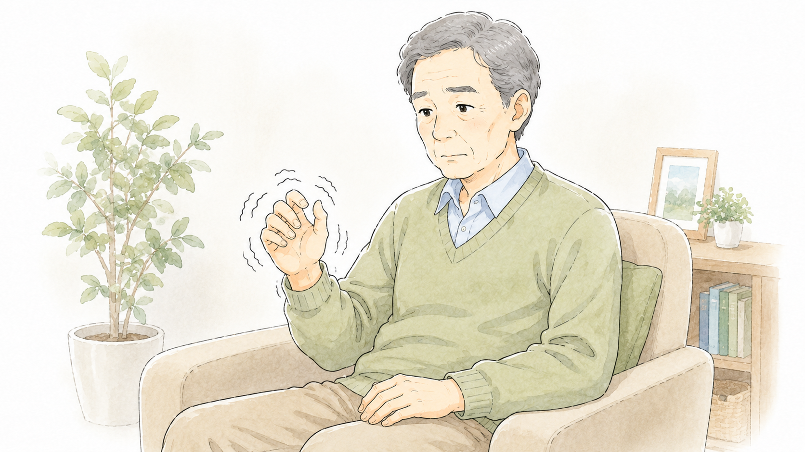
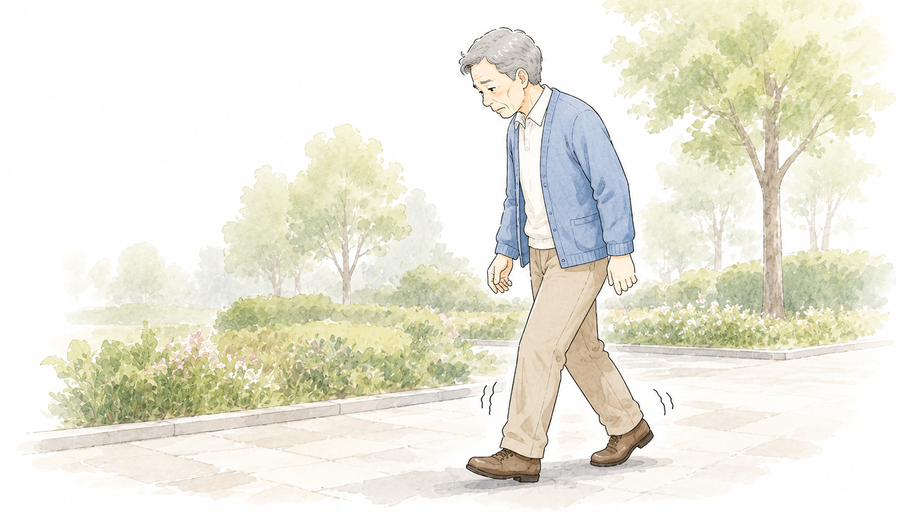
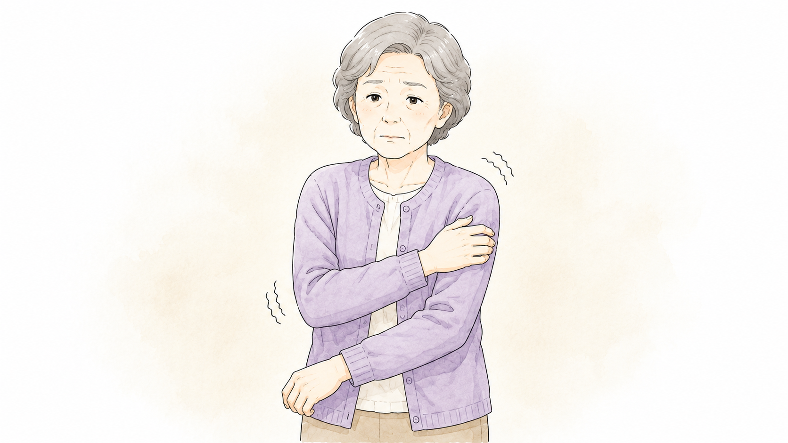
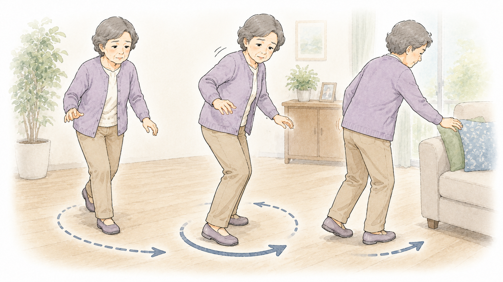
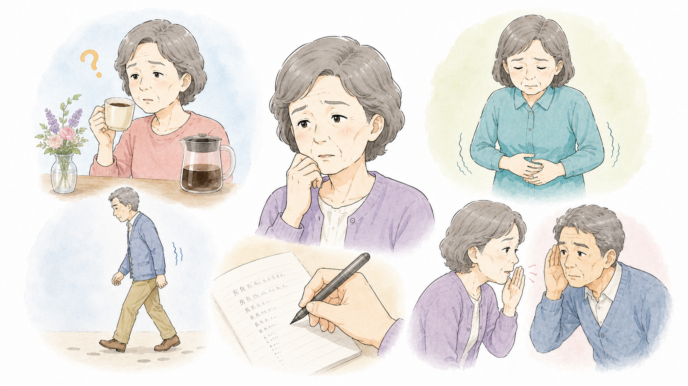
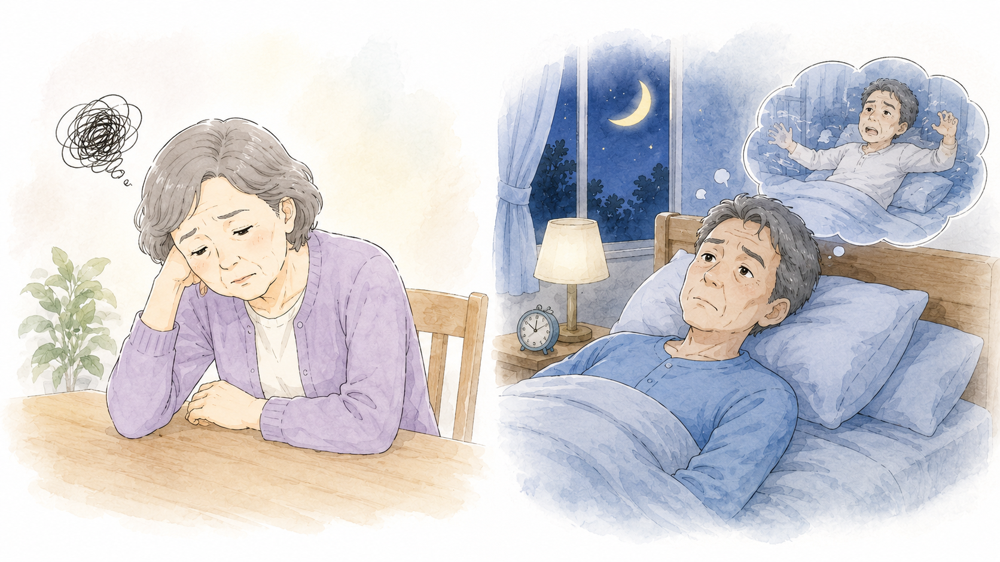

主な症状と
特徴的なサイン
パーキンソン病は、運動症状と非運動症状の両方が現れる神経変性疾患です。初期の症状はわかりにくいことがあり、「歳のせいかな?」と思われがちですが、以下のようなサインが見られたら注意が必要です。
1. パーキンソン病の
代表的な4大運動症状
パーキンソン病の特徴的な運動症状は以下の4つです。
1
震え(振戦)
しんせん

- 安静時(静止時)振戦(じっとしているときに手足が震える)が特徴的。
- 片手の指先や手首から始まることが多い(コインを数えるような動き)。
- 緊張すると震えが強くなり、動作をすると震えが減る。
- 進行すると反対側の手や足にも広がる。
2
動作の遅れ
動作緩慢、寡動 / かどう

- 体を動かすスピードが遅くなり、動作がぎこちなくなる。
- 歩き始めが遅く、歩幅が小さくなる(すり足歩行)。
- 服のボタンを留める、字を書くなどの細かい動作が難しくなる。
- 手の振りが少なくなる(片側だけ振りが小さいことも)。
3
筋肉のこわばり
筋強剛 / きんきょうごう

- 手足や首、体の筋肉が固くなり、動きづらくなる。
- 腕を動かしたときに「カクカク」とした抵抗を感じる(歯車様固縮)。
- 表情筋の動きも減り、無表情(仮面様顔貌)になることも。
4
バランス障害
姿勢反射障害 / しせいはんしゃしょうがい

- 体のバランスが悪くなり、転びやすくなる。
- 歩き始めると止まれない「突進歩行」が見られることがある。
- 方向転換がしづらく、体が傾いたまま倒れることも。
2. パーキンソン病の
特徴的な初期サイン
病気が本格的に進行する前に、次のような「前兆」が現れることがあります。

嗅覚の低下
- 食べ物の香りが感じにくくなる。
- 風邪でもないのに、コーヒーや花の香りがわからない。
便秘
- 長年続く頑固な便秘(腸の動きが遅くなるため)。
- 繊維質の食事や水分をとっても改善しにくい。
小さな字を書く(小字症)
- 以前より字が小さく、読みにくくなる(手の動きが鈍くなるため)。
- 筆圧が弱くなり、書き始めよりどんどん字が小さくなる。
声が小さくなる(小声症)
- 話す声が小さくなり、早口で聞き取りにくくなる。
- 周囲から「最近、声が小さくなったね」と言われる。
歩き方の変化
- 片側の腕の振りが少なくなる。
- 歩幅が小さくなり、足をすりながら歩く。
- 方向転換がスムーズにできなくなる。

うつ症状や不安感
- 気分が落ち込む、やる気が出ない。
- 不安を強く感じることが増える。
睡眠障害
- 寝ている間に怖い夢を見て、激しく動いたり、大声を出す(レム睡眠行動障害)。
- 不眠、夜中に何度も目が覚める。
3. パーキンソン病の
非運動症状
パーキンソン病は運動症状だけでなく、以下のような非運動症状(体の動き以外の症状)も伴います。
嗅覚障害
においを感じにくくなる(コーヒーやカレーの香りがわからない)。
便秘
腸の動きが鈍くなり、頑固な便秘が続く。
うつ・不安
落ち込みやすくなり、気分の波が激しくなる。
認知機能の低下
記憶力の低下、注意力の低下が見られることがある。
自律神経症状
血圧の変動、立ちくらみ、発汗異常が起こることがある。
睡眠障害
夜中に目が覚める、寝ている間に夢を見ながら動く(レム睡眠行動障害)。
疲労・倦怠感
体がだるく、疲れやすい。
4. まとめ

パーキンソン病の症状は運動症状と非運動症状に分かれ、個人差があります。震えがないからパーキンソン病ではないとは限りません。
代表的な4大運動症状
- 震え(振戦)：安静時に手足が震える
- 動作の遅れ(寡動)：歩幅が小さくなり、動作がぎこちなくなる
- 筋肉のこわばり(筋強剛)：手足がカクカクして動かしにくい
- バランス障害(姿勢反射障害)：転びやすくなる
特徴的な初期サイン
- 嗅覚の低下
- 便秘
- うつ症状
- 小さな字を書く(小字症)
- 声が小さくなる(小声症)
- 歩き方が変わる
非運動症状
便秘、嗅覚障害、睡眠障害、うつ・不安、自律神経症状(立ちくらみ、発汗異常)

非運動症状が先に現れることもあるため、違和感があれば早めに医師に相談することが大切ですね。
監修：大阪大学大学院医学系研究科 神経内科学講座 池中建介 先生